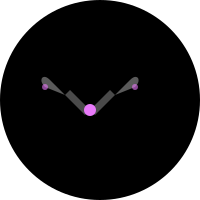
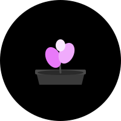
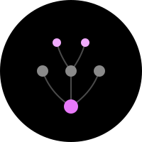
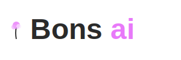

Bonsai Logo Concepts
10 Visual Interpretations for the Developer OS
Current Logo
Stylized bonsai tree with pink cherry blossom accents
01
Classic Bonsai Refined
Geometric refinement of current tree illustration
Stylized bonsai tree in profile with simplified geometric shapes. Trunk uses gradient from dark gray to light gray, foliage represented as abstract cloud shapes with magenta/pink accent dots suggesting cherry blossoms.
Evolution of current logo with cleaner, more modern execution. Maintains brand recognition while improving scalability and reducing visual complexity.
Literal
Organic
02
Terminal Tree
*
/|\
/*|*\
/**|**\
/***|***\
|||
|||
Bonsai tree silhouette constructed entirely from monospace characters and symbols. Green terminal text on dark background, resembling ASCII art in a command-line interface.
Bridges the "nature" and "developer OS" identities by reimagining the organic tree through the lens of code. Appeals directly to developer audience while maintaining the cultivation metaphor.
Digital
Developer-focused
03
Growth Stack
Abstract representation using horizontal layers/strata that decrease in width from bottom to top, creating a triangular tree silhouette. Layers colored in progression: dark gray → medium gray → light gray → pink → magenta.
Abstracts the tree into a "tech stack" metaphor — each layer represents accumulated capability. The vertical growth mirrors both tree growth and software development progress.
Abstract
Tech Stack
04
Pruning Shears Icon

Minimalist icon of pruning shears/scissors designed specifically for bonsai cultivation. Clean line art in dark gray with magenta accent on the pivot point or handles.
Shifts from the tree itself to the act of cultivation. Pruning represents deliberate decision-making, removing excess, and shaping growth — core to both bonsai art and software development.
Tool/Process
Active Agency
05
Pot + Sprout

Stylized bonsai pot (wide, shallow, rectangular) in dark gray with a small, energetic sprout emerging from the center. Sprout has 2-3 leaves rendered in bright magenta/pink with simple geometric shapes.
Represents the "developer OS" as the container/environment where AI agents (the sprout) grow. Emphasizes new beginnings, potential, and the nurturing environment Bonsai provides.
Potential
Playful
06
Circuit Tree
Bonsai tree rendered as circuit board traces with glowing nodes
Bonsai tree where the trunk and branches are rendered as circuit board traces (copper/gold color) and the foliage is represented as glowing nodes/connection points in magenta and pink.
Fuses organic growth with electronic/AI themes. The circuit traces suggest AI pathways and agent connections, while maintaining the tree structure. Directly communicates "AI-powered" nature.
Hybrid
AI-Focused
07
Branch Network

Abstract network diagram styled to resemble bonsai branch structure. Nodes are circles of varying sizes (representing different AI workers) connected by curved lines forming a tree-like hierarchy.
Visualizes Bonsai's multi-agent architecture as an organic network. Each node represents a worker persona, branches represent communication/collaboration. Maintains growth metaphor while clearly signaling the "team of AI agents" concept.
Multi-Agent
Network
08
Wordmark: "ai" Accent

Clean sans-serif wordmark "Bonsai" in dark gray with the "ai" characters highlighted in bright magenta/pink. Optionally includes small bonsai tree icon to the left or integrated into the "B" letterform.
Per ticket instructions: "the ai can be accented or colored differently." Makes the AI identity explicit while maintaining clean branding. Highly legible, works well at small sizes.
Typography
AI Emphasis
09
Isometric Pot Garden
3D isometric view of pot containing multiple trees at different growth stages
Isometric/3D projection of a shallow bonsai pot viewed from above at 30° angle. Inside the pot are 4-5 small stylized trees/sprouts at different growth stages, representing the different AI worker types.
Represents Bonsai as a "garden" of AI agents rather than a single tree. Each agent is at a different stage of growth/maturity. The isometric view gives a modern, game-like quality.
Garden/Collective
3D/Isometric
10

Zen Circle + Minimal Tree
Ensō (Zen circle) hand-brushed in dark gray/black ink stroke. Inside the circle, a minimal bonsai tree reduced to absolute essentials: single curved trunk line, 2-3 foliage clouds as simple shapes.
Embraces the Japanese/Zen aesthetic roots of bonsai culture. The ensō represents enlightenment, strength, and the universe. Minimal execution ensures scalability and creates a calm, focused brand presence.
Zen/Eastern
Minimalist